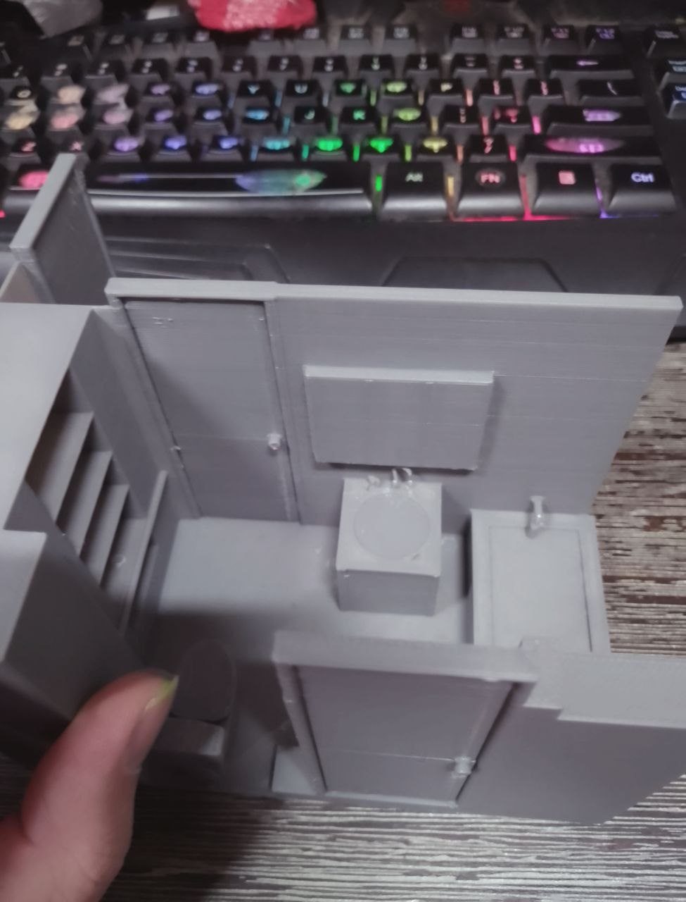
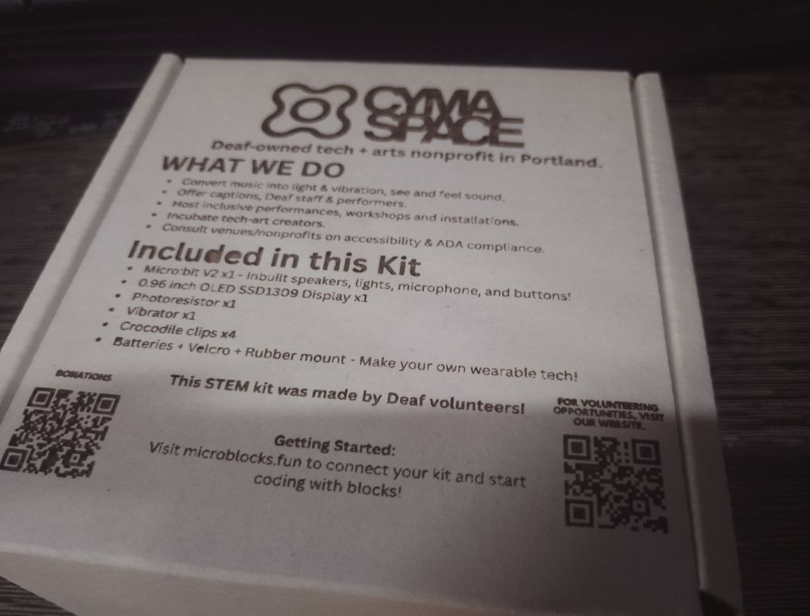

A multifaceted innovator driving accessibility in technology.
Welcome! I’m a maker, developer, and designer with over a decade of experience turning ideas
into working things; websites, devices, installations, you name it. I’ve built everything from
responsive, accessible sites to custom hardware for live performances. These days I’m a Lead
Design Engineer, but I still take on freelance work of all shapes and sizes: 3D printing parts,
prototyping gadgets, creating interactive art, or helping bring “wouldn’t it be cool if…”
concepts to life. You can see some of my projects on my youtube!
As a Deaf developer, inclusivity is built into everything I create. I’ve found that the most
interesting projects often come from unexpected collaborations; engineers, artists, educators, or
just curious people with wild ideas. If you’ve got something unconventional in mind, I’m all
ears (metaphorically speaking).
Outside of work, you’ll usually find me outdoors, gaming, or in the workshop tinkering with
laser-cut designs. I’m constantly chasing new skills and challenges, with a steady focus on
making technology more accessible and engaging for everyone.
I’m currently finishing my degree in Creative Coding at Portland Community College, specializing
in embedded tech. It’s about time I got the official piece of paper to go with the skills I’ve
been building for years!
If it can be built, I’ll find a way to make it happen! Let’s talk, whether it’s an accessibility
tool, a custom gadget, or an art piece that needs a little engineering magic.
Like many nerds, I've picked up a bunch of high-tech hobbies such as laser cutting and 3D
printing! I'm good at a lot of things, but taking pictures isn't one of them.
You can find many of my other projects on YouTube; most of my shorts are just me
screaming until the neighbors call the police, but some are pretty neat!
Lasered Artworks
Lasered metal sheets
My laser cutter can engrave extremely detailed images onto metal sheets. Its maximum resolution
is
1000 DPI. See the video playlist below along with pictures.
It turns out my laser cutter works great on rocks, ceramics, and more!
Chladni Patterns
These patterns appear when you play sound against a metal plate. I generated images of them and then
lasered them out!
ASL clock
Lasered out an American Sign Language clock, and installed a clock kit! Is there anything laser
cutting can't do?
Fan arts
I've gotten really good at lasering detailed artworks out on wood!
Goid Foil
My laser cutter works pretty amazingly with thin foil glued to pieces of wood!
Signs
I've been making signs for items on sale!
Vent System
Safety is important when laser cutting! My laser cutter is in a corner in my lab, and I've found that
having a venting system that pulls all air away from my laser cutter massively improves the
machine's outputs while protecting my lungs.
ASL Dice Game
Made a wooden dice game quickly for ASL game night at the Deaf Cafe.
The rules are as follows:
FingerSpelling
Picture: Hand shapes for each letter of the alphabet.
Challenge: The player must finger spell a word given by another player. The word
can
be anything from simple (like "cat") to complex (like "university"), depending on the skill
level.
Everyday Phrases
Picture: Illustrations of common phrases like "Hello," "Thank you," "How are
you?"
etc.
Challenge: The player must correctly sign the phrase that corresponds to the
image.
Other players verify the accuracy.
Action Signs
Picture: Illustrations of actions like running, jumping, cooking, etc.
Challenge: Mime the action, have others guess, then sign a sentence using the
action.
Emotions
Picture: Faces showing different emotions like happy, sad, angry, surprised,
etc.
Challenge: The player must sign the emotion depicted and then use it in a
sentence.
For example, if the emotion is "happy," they might sign "I am happy today."
Animal Signs
Picture: Various animals like a dog, cat, bird, fish, etc.
Challenge: The player must sign the animal shown and use it in a sentence or a
short
story. For example, "The dog is playing in the yard."
Story Time
Picture: A scene from a story, such as a park, a school, or a kitchen.
Challenge: The player must create a short story or sentence using signs to
describe
what's happening in the scene. Creativity is encouraged, and players can elaborate as much as
they
like.
Example of gameplay:
1 Dice
Player 1 rolls the dice...
Fingerspelling: Player 2 signs Shrek
Player 1 fingerspells Shrek
2 Dice
Player 1 rolls the dice...
Fingerspelling: Player 2 signs Shrek
Action Signs: Man jogging
Player 1 fingerspells Shrek, then signs about Shrek jogging
3 Dice
Player 1 rolls the dice...
Action Signs: Man falling
Scene: Coffee cafe with two ladies
Emotion: Disgusted
Player 1 rearranges dice into scene - action - emotion
Signs about a pair of girls out front of a cafe. A plumber exits the cafe carrying a bucket
filled with slime... The plumber trips and falls over, splattering the girls with slime. The
girls are disgusted!
4 Dices
Let there be chaos
Short notes:
The fingerspelling side is like a wildcard, it can become anything affecting the entire story
when
more than one dice is rolled. It builds up signers' confidence in their fingershaping abilities.
3D printed Artworks
3D Painting
I've been getting really into 3D painting! It's like making stained glass art but without the
headaches of handling molten glass or mixing dyes.
Chladni Patterns
These patterns come out nicely when 3D printed!
Magnetized 3D arts
Magnets are the solution!
Masks
Masks Masks Masked Masks Masks for Masks MASKS
Renders
I've been practicing making 3D models of spaces. Currently, the images below are of my bathroom! This
is more useful than a map... Try getting lost in there with this in your hand!

Signs
Turns out that 3D printers are really good for making signs with! It's slower than my laser cutter,
but still, it's a cool option.
Misc/unsorted
Embrace the chaos.
Embedded Technology Madness
Twang
Played around with TWANG. Fixed the legacy code, and
put it on modern ESP32s and managed to fit everything into a laser-cut box.
Wearables
I've dabbled a bit into wearable tech. The one below is a haptic dataglove prototype, it's capable of
getting data wirelessly to control the haptic motors, from computers, other gloves, sounds, etc.
Scream-Time Clock
Better than a broken clock, this audio-reactive clock is right more than twice a day! If you scream
constantly.
Misc
Art wall
The wall outside my lab. It overflows!
Sale Kiosk
A sale kiosk I built for my artworks to be sold at the Deaf Cafe! It's a good way for me
to get rid of artworks before I drown in them. I'm way more interested in making than keeping.
Todd Fadel launched a contest for PatchXR, with winners judged on best use of AR, AI, or physics, plus a “kindest overall” category.
PatchXR is an important tool for the Deaf community, providing accessible, modern music-making environments and a quick way to collaborate remotely.
I designed and built custom award pieces for the winners.
Each award was based on the PatchXR logo, with the “XR” portion mounted to a motor that spins when it detects a loud enough sound.
I integrated n00ds (flexible LED filaments) on the motor to mimic PatchXR’s in-app glowing signal wires.
Under the “Patch” letters, I installed addressable LED strips programmed to map brightness to loudness level and color to frequency.
This mirrors the signal-mapping concept that’s core to PatchXR’s design.
Bill of Materials
Note: Amazon links are for reference only—pricing is inflated.
The packages was wrapped up with duct tape after I added a little Shrek figure. Pirateship have made this extremely affordable for everyone!
STEM kits for Oregon Museum of Science and Industry
OMSI reached out to CymaSpace about its Oregon
Science Festival, then CymaSpace reached out to me. I was given a specific budget, so I did
my best to make a kit that fits the budget. A lot of corners was cut, but I managed to pull together
something pretty neat!
CymaSpace's basic STEM kit, designed for all age!
The Micro Bit V2s are pre-flashed with Microblocks,
which makes reprogramming it possible and easy with any devices capable of running chrome, including smartphones! I was able to secure a bulk
deal to get 30 kits within the budget.
The controllers have sensors and outputs built right into it, ready to be played with out of the box
without any soldering or assembly required. The other parts in the box are extras, confirmed to
work. The OLED screen is an unique addon because the Micro Bit V1s did not have the capacity to run
OLED screens. If all goes well, CymaSpace will be stocking those kit boxes at the Woodstock Cafe
year-round and eventually have me to design add-on kits for the core kit, each with their own
themes, lights, motors, sensing, etc.

LED Controller Workshop
I ran a workshop at CymaSpace’s Woodstock Cafe where participants built and programmed their own LED
controllers using MicroBlocks flashed onto
ESP32 SuperMinis.
The fun part? These specific ESP32 boards can be bought in bulk for under two dollars each.
MicroBlocks makes them accessible to complete beginners while still being powerful enough for
serious projects. Unlike Arduino C++, there’s no IDE to install, any device that can run Chrome can
also program a MicroBlocks-compatible board, either by USB or over Bluetooth if the hardware
supports it. That includes smartphones and tablets! (Horrible experience, but still...!)
I also 3D-printed the shells for the LED strips and demonstrated just how much physical abuse LED
strips can take before failing, and how to repair them when they do. Nearly every part of the kits
was 3D-printed, except for the LEDs and controllers.
The flyer for the event!The LED kits I pulled together for the workshop
Video of the workshop happening! This was possible thanks to Meagan Bogard and Harris Miller for volunteering as interperters!
GestoLumina GeLu
I helped design and build GeLu for Universal Music Design at CymaSpace. It is a pair of wearables for
gesture input, fingertip haptics, and audio-reactive light so Deaf folks can perform and feel music. We
premiered it at NIME 2024. Read the research paper
GeLu v2 was the final version created under UMD. From GeLu v3 onward, all design and development have been conducted independently by me using my own resources.
I met Andrew at the Control+H hackerspace, and we got
talking about the GeLu and my future plans for GeLu. I'll eventually be taking this to crowdsupply!
Many other engineers was impressed by how seamlessly the GeLu improved their awareness of the room.
It was awesome talking to Andrew! He indirectly made many things in my life easier, especially
related to open-sourced hardwares!
This was during the Teardown2025
event, where I met many engineers and made new connections. I had a
great time!
Portland Community College invited me to visit their advanced Interface Design class (MUC 262) on
March 3 2025. I haven’t taken any of PCC’s wearable tech courses by then, but they still called my
session a masterclass, which felt like a huge compliment!
I brought in GeLu and a few other prototypes to show how I approach rapid prototyping for
accessibility, especially using haptics to make music and sound more tangible. We spent the session
testing different feedback patterns, talking through build decisions, and exploring how interface
design changes when you focus on feel instead of just sight or sound.
Think petting zoo, but instead of goats and chickens, it’s a bunch of hacked-together machines that
poke, buzz, rumble, and squish in strange ways. I set up a room full of different haptic devices so
people could walk around and touch sound — bass thumps you can feel in your chest, fingertip buzzers
that tickle like carbonated water, and low-frequency shakers that make tables feel alive. The goal
was to explore how many ways we can send information through skin and bones instead of ears.
Watching people bounce between devices, compare sensations, and then try to “play” them like
instruments was the best part. I left with a pile of new ideas for haptic patterns, some hardware to
rebuild, and a strong reminder that curiosity scales way better than volume knobs.
One of the works I did with Universal Music Design was building their website, but not just a
regular music site.
I wired it up with the Web
Audio API so it could run live FFT analysis on any audio playing. The result? A reactive fog
simulator that changes color and intensity based on the frequency and volume of the music.
High notes bring a purple haze. Deep bass rolls in with red. The sidebar becomes a visual
translation of the music, letting Deaf and Hard of Hearing users experience sound in a more tangible
way.
For me, it’s not just about visuals. It’s about making music more accessible. Confluence, one of the
first
recording studios founded by a Deaf music producer, sums it up perfectly:
“We take pride in pushing boundaries, creating an environment where innovation thrives, and where
sound is not
just heard but felt.”
That’s exactly what I aimed for with this build: turning audio into a shared sensory experience.
You can also check out some of the
Confluence workshops I’ve led for the
Universal Music
Design group over the years.
Presenting Crossroad University – a project I tackled to revamp a website tailored for Mental Health
Counselors seeking continuing education. Despite reaching a point where further collaboration wasn't
pursued by the client, I successfully implemented significant improvements, including a massive SEO
upgrade and modern features.
Alexis, the owner of shakeitoffcatgroomz, is a deaf entrepreneur who is passionate about bringing
joy
to pets and their owners through her services. As a fellow member of the deaf community, I was
honored to work with Alexis and help her bring her vision to life.
Alexis approached me with a clear vision of what she wanted for her online storefront at
MoeGo. She needed a simple yet stylish website that could be
quickly loaded and personalized to her liking. Working within her budget, I was able to leverage the
latest
technologies to create a website that not only met but exceeded her expectations.
The website has a clean and modern design, with a user-friendly interface that allows visitors to
navigate with ease. Alexis wanted the website to be visually appealing, and I made sure to
incorporate
high-quality images that showcase her products in the best possible light.
Although the website is currently in its early stages, there is enormous potential for growth.
Alexis is
delighted with the website's current state, but we have discussed plans to expand it in the future.
As
her business grows, we will add more features and functionality to the website to keep it up-to-date
and
relevant to her customers.
Update:
Regrettably, like many other startups, Alexis' business struggled to attract enough clients and
eventually had to cease its operations. It's always disheartening to witness such setbacks,
especially
for a passionate entrepreneur like Alexis, who had a remarkable vision. While her business journey
took
an unexpected turn, we can still appreciate the effort and dedication she put into it.
Entrepreneurship
often involves ups and downs, and there's no doubt that Alexis will carry the valuable lessons
learned
into her future endeavors.
It’s a Gatsby front end, with a headless wordpress on the backend, and a Disqus comment system… Ah,
yes,
and a google sheet contact form! Hosted on Netlify! I put everything together with the goal of
keeping
the monthly costs close to free as possible, and ease of use for Mark.
Why Gatsby?
Gatsby is a static site generator. The static sites it outputs is unmatched in speeds, due to
everything
being compressed down much as possible, far beyond what’s normally done with a hand-crafted website
from
ten years ago! This makes it so the website downloads and displays on people’s devices faster.
One of the many ways Gatsby achieves its speed is to pull in all of the contents it’ll be using from
all
over the place via GraphQL when it’s generating a static website, and merge all of the files that
makes
up the website into a single file with a minimum amount of white spaces in it!
A normal hand-made website from before Gatsby’s time would have a lot of files that needs to be
downloaded one at a time… Styles, pages, pictures, javascript, etc. When people’s devices are
downloading files, there is a bit of lag between files, which can easily add up to seconds before
the
website is finally completely loaded.
It’s faster to download a single file than many files, even if the single file is bigger than all of
the
other files put together!
And oh boy, there’s the plugins… Long story short, there’s a bunch of black magic going on out of
sight
deep within Gatsby’s guts. Goat sacrifices, cultist chanting, elder gods stirring in their slumbers,
etc. I’m still not quite sure what’s going on, but I like it! I’ll be using Gatsby more often down
the
road.
Why WordPress?
WordPress have a smartphone app for posting posts from, and is much easier to pull data from than
twitter or facebook. I figured that this would be the best option for Mark. Install the smartphone
app
on his phone, and have his nurses to make posts, with pictures, videos or whatever! Poke the app,
make
post, text away, post and done!
WordPress have a bunch of drawbacks if you’re also using it as the front end for your website… Slow
load
speeds, due to each visitors needing to download many, many files before the website displays.
There’s a
lot of moving parts on the server side too!
WordPress also doesn’t allow you to have custom styles unless you sign up for a monthly plan, among
other numerous limits.
Chopping the head off (Headless CMS!) solves a lot of those issues. Each time the Gatsby front end
is
rebuilt, it pulls all posts from WordPress. The power of the WordPress, and the speed of Gatsby,
folded
into a single entity!
Why Disqus?
Somehow linking up comments between wordpress and the gatsby front end was an option, but it turned
out
to be much easier to just throw a Disqus comment widget into the blog page, and have different
threads
to be loaded for each selected posts.
Disqus is also designed just for comments… So they have more support for comments. In WordPress’s
case,
it’s like being a jack of all trades, master of none. Using Disqus’s comment system instead of
WordPress’s comment system also makes it much easier to display comments in real time rather than
requiring the website to be destroyed and rebuilt each time someone posted a new comment.
Google Sheets? Are you crazy!?
A bit! My initial plan was to just use Netlify’s form system to handle the contact form, but it
turned
out that there was a limit to the number of forms the system would accept for a free account! 100
submission a month!
This work-around I implemented adds a lot of flexibility in that area. As it is now, messages sent
though
the contact form gets passed to a google script web app that appends the google sheet with the name,
email and message then email Mark’s Gmail with the information, along with a link to the google
sheet so
he won’t miss a single thing! Cool thing about this, in the gmail window, he’ll be able to just
click on
the email address to start writing an email to them right away! That wouldn’t had been possible with
Netlify’s system!
Why Netlify?
Netlify is one of the two options out there (Heroku is the other). I went with Netlify because for
months, I’ve heard nothing but praise from my nerdy friends about how easy Netlify makes everything.
I’m blown away! Netlify is a match made in heaven for Gatsby, because of the webhooks Netlify
provides.
Attach those hooks to something, and when that something changes, the hook’ll get tugged on which
trigger an action… In this case, a rebuild of the gatsby website! Soon as a new wordpress post is
made,
WordPress tugs on the webhook I dragged over from Netlify into wordpress’s guts to trigger a rebuild
of
the Gastby front end!
Total Montly Costs?
And in the end, I've managed to keep the monthly cost at zero for this set-up!
The sweetest thing is, if any part suddenly goes up into flames. Like, google dissolving somehow,
easy as
pie for me or any other nerds that have a vague understanding of what's going on here to pop out the
burning parts and plug in a different part! Take the comment system, for example, there's like ten
other
options out there! (And even more ways to craft one out of nothing... Like using google sheets!)
Wordpress goes down into flames? Find a new content management service and chop off the head then
attach
Gatsby over the bloody stump!
Nettlify goes nuclear? Heroku!
Everything but Gatsby melts down somehow? Self-hosting!
Brain on music, this course went over how music interacts with the brain. It helped me to
understand why music sometimes caused such strong emotional reactions, and further solidifed
my understandings of what makes a good sound good for most people.
For my Final Project, I covered
what music is for the deaf community.
MUC-219-12826 - Sonic Construct Of Identity
Sonic Agency! For my final
project, I spoke about what the deaf community's sonic identity looks like, and why.
This is also the final project for my audio programming 2 class! The backside being driven
by this GUI, using nodeJS to commuicate with Max Cycling. (See Unmasking - converted to pure
javascript for this with audio in your browser)
MUC-272-42166 Creative Coding
Magic Cubes - ThreeJS
Normally, in my creative coding class, we use the Processing
programming language. For my final project, I decided to kick that to the side and do it in
Javascript with Three.JS. What I did would be extremely challenging to pull off in
Processing due to its synchronous nature.
Project
Link. The API key is currently expired, but it's still pretty cool without that
extra feature. Fail gracefully!
MUC-218-42638 Digital Arts and Equality
This is one of my Prezis, about
what I've been doing to improve access to music for the
deaf. It's a massive topic. The teacher demanded that I keep going instead of cutting the
presentation
short due to going over time!
JavaScript Fun
A random nerd challenged a room filled with nerds to take a string and arrange all of the
letters so the block of letters appears as a perfect block. Many nerds came up with random
approachs to this random challenge. Below are my answer to the challenge.
I was playing with Google's grasshopper app the other day, and was somewhat impressed by how
easy it was to animate SVGs using JavaScript's D3 package... And decided to play around with
that idea on my desktop.
I became very interested in ThreeJS when I discovered that the library had support for VR gears.
I thought, why not make a personal world instead of a personal website, like in those weird
japan animes? This "Hello World" experiment with ThreeJs showed me that the learning curve with
this library is very gentle. It's easy to do anything with ThreeJS, just read the documentions!
It's very well documented, and there's PLENTY examples to reverse-engineer for whatever you
need!
On a whim, I decided to try to find a way to arrange texts into a circle.
I thought it would be easy... It wasn't easy at all! Some trigonometry was
required to arrange everything into circle. The result of this miniproject
is that I now have a very easily reuseable snippet of code that can arrange
anything into circles... If I wanted to, I could make it recursive, circles all
the way down and up!
I've used the circle snippet I made when redoing one of my old course homeworks for fun, see
details below.
Keyframe doodles here! The grandfather clock is my first Keyframe doodle,
which I pretty much made right away after learning about CSS keyframes for
the first time. So easy, and customizable!
I heard that by cheesing how HTML and CSS works, you can make onclick-like
events to occur without using any scripting languages. This miniproject is
my attempt at the checkbox hack.
The checkbox hack is a VERY interesting approach to accessibility. It's bad
semantics, but it's very dobable to design websites that fake onclick events
by using the checkbox hacks. The main drawback is that it will not degrace
gracefully when used in older browsers... Instead of degrading in any ways,
it would just break, completely!
This project was an exercise in dynamic programming. The goal was to make something that
would change based on the choices the user makes. I went way overboard by deciding to
turn
an .ebook into easily parseable JSON for a javaScript engine I made to work with text
adventure books! It will work with any text adventure book long as the input is the
JSONified book.
For the book I selected, it was pretty fun finally "playing" the book after porting it
over. I didn't read a single thing in the book when figuring out how to easily jsonifity
it. If I had to redo the project, there is a ton of things I would be able to do better.
Sadly, an adventure book parser/player thingy isn't THAT cool!
I was inspired by a random ransomware attack and annoying website pop-ups to see
how irritating I could make them. I came up with a pop-up that starts running
around the screen as soon as it spawns, making it very frustrating to close.
One big thing I learned from this mini project is that pop-ups can only be
triggered by user actions and are limited to one pop-up per action, so you can't,
for example, make thousands appear from a single click.
I found a few ways to completely lock up the browser so that the task manager is
needed to kill it. Because that vector of attack is so annoying, I'm not posting
it here! The version I'm sharing is harmless—you can stop the moving pop-up by
closing the page that spawned it.
2025 update - I was just looking at this dusty script again, and remembering how far browsers
have came. I was likely one of the reasons for the current policies blocking the old script
from working! Good times. I've added a modernized evil redo... It's somewhat evil.
Flexbox layouts are
awesome!
It made building this goofy site very easy! I didn't have to worry about screen sizes, etc...
Flex takes care of all of that!
I made this prototype a long time ago when someone asked if I could gather more information
about their visitors without using third-party scripts. It was much easier than I expected. I
built it in both PHP and JavaScript. With PHP, extracting information about visitors was much
easier, and I set the script to email me whenever it encountered a new browser or device.


{kind=link}
{kind=link}